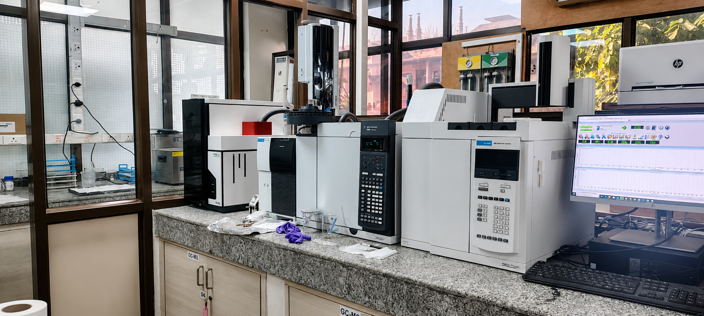

Thermal Desorption Gas Chromatography–Mass Spectrometry (TD–GC–MS) is an analytical technique used for the identification and quantification of volatile and semi-volatile organic compounds (VOCs and SVOCs), typically non-polar to moderately polar compounds, from various environmental and industrial matrices. In this technique, analytes collected on sorbent tubes or other suitable sampling media are released by thermal desorption and transferred into a gas chromatograph for separation. The separated compounds are subsequently detected and identified using a mass spectrometer based on their mass spectra.
| Sr. No. | Type of analysis | Spectra / Report provided |
|---|---|---|
| 1 | TD–GC–MS analysis of VOCs/SVOCs | TIC chromatogram, mass spectra |
| 2 | Compound identification | Library search of GC peaks (e.g., NIST library) |
| 3 | Qualitative analysis | Identification of compounds based on mass spectra |
| 4 | Quantitative analysis | Concentration results using calibration curves |